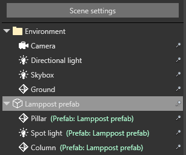
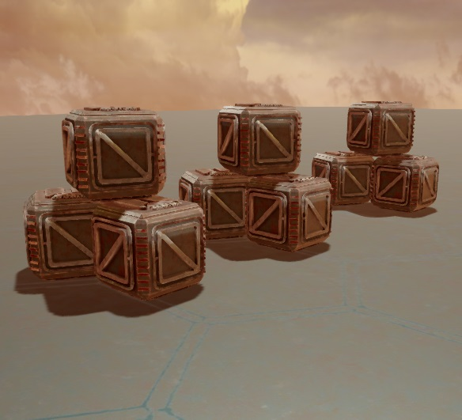
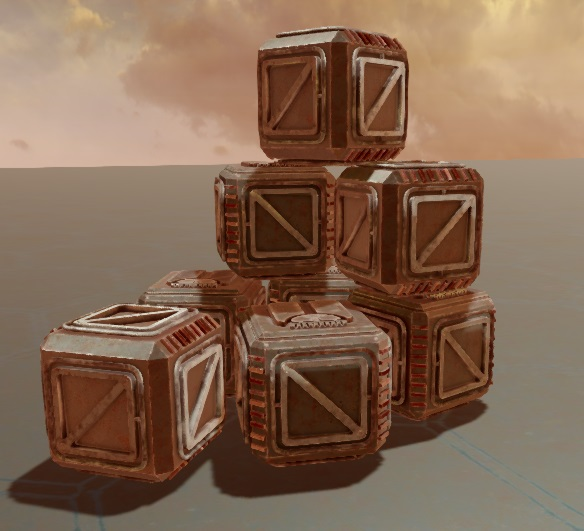
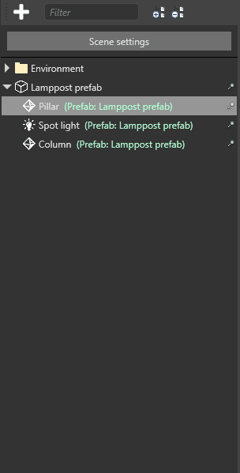

Use prefabs
Intermediate Programmer Designer
To instantiate a prefab, drag and drop it from the Asset View to the scene.
You can re-arrange entities in the prefab instance just like you do with other entities:
- create child and parent entities
- drag entities to add them to the prefab instance
- drag entities from the prefab instance to make them independent entities
Manage prefab parent entities
By default, Game Studio creates an empty parent entity with the prefab's entities as its children. The Entity Tree displays the prefab parent name in green next to the child entities.

This is useful because you can manage the prefab entities as a group and maintain their relative positions. For example, imagine you have a car prefab assembled from several entities (a body, seats, four wheels, etc). You want its component entities to stay grouped together as you move the car around the scene. You can do this by moving the prefab parent entity.
If you don't want to create a parent entity with the prefab, hold Alt when you drop the prefab into the scene. This is useful if you don't care about the relative positions of the prefab's entities and don't need to move them together as a group. For example, imagine you have a prefab composed of several crate entities arranged in a random fashion. It's not important that the crates maintain their relative position after you place them; in fact, several identical stacks of "randomly" arranged crates looks artificial.
In this case, a parent entity is unnecessary. Instead, you can create several instances of the prefab, then re-arrange their individual crate entities to create the effect you need.
| Relative positions maintained | Relative positions ignored |
|---|---|
|  |  |
Break link to prefab
After you add a prefab instance, you can break the link between the prefab and any of its child entities. This means the child entity is no longer affected by changes you make to the prefab.
To do this, in the Scene Editor, right-click a child entity or entities and select Break link to prefab.

Instantiate and add prefabs at runtime
To use prefabs at runtime, you need to instantiate them and then add them to the scene in code.
public class SpawnPrefabOnStart : StartupScript
{
public Prefab MyPrefab { get; init; } // init here prevents other scripts from changing this property
public override void Start()
{
// A prefab may contain multiple entities
var entities = MyPrefab.Instantiate();
// Adding them to the scene this entity is on
Entity.Scene.Entities.AddRange(entities);
}
}
Note
Instantiate() by itself isn't enough to add a prefab instance to the scene. You also need to Add() or AddRange() them to a scene . For example, if your prefab contains a model, the model is invisible until you add the prefab instance. Likewise, if your prefab contains a script, the script won't work until you add the prefab instance.
If you have a prefab named MyBulletPrefab in the root folder of your project, you can instantiate and add it with the following code:
private void InstantiateBulletPrefab()
{
// Note that "MyBulletPrefab" refers to the name and location of your prefab asset
var myBulletPrefab = Content.Load<Prefab>("MyBulletPrefab");
// Instantiate a prefab
var instance = myBulletPrefab.Instantiate();
var bullet = instance[0];
// Change the X coordinate
bullet.Transform.Position.X = 20.0f;
// Adding just the bullet to the root scene
SceneSystem.SceneInstance.RootScene.Entities.Add(bullet);
}
Note
At runtime, changes made to prefabs (myBulletPrefab in the above example) don't affect existing prefab instances (bullet in the above example). Subsequent calls to Instantiate(Prefab) include new changes.
For example, imagine you have a tree prefab that contains a script to change the tree color from green to red at runtime. The script won't affect existing instances of the prefab; it can only change the color of future instances. This means prefabs instantiated after the code runs will have the new color, but existing prefabs won't.